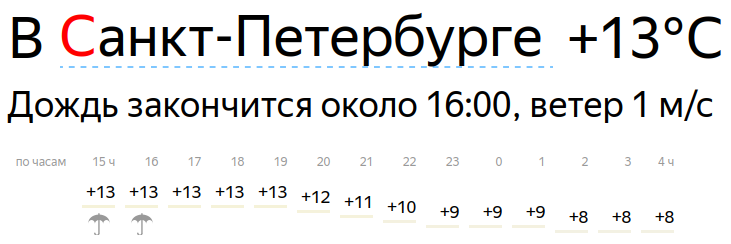

По адресу p.ya.ru/xxx находится страница Яндекса с кратким прогнозом погоды, где xxx - это идентификатор населенного пункта. Выглядит эта страница так:

Ссылки для крупных городов:
Нажав на имя города, можно выбрать другой город и в строке браузера узнать его идентификатор.
Чтобы получить текущую температуру, в Linux можно воспользоваться вот такой командой:
curl -s -G -L https://p.ya.ru/2 | awk 'BEGIN {RS="<"; FS=">"} /_temperature_/ {print $2}' | awk '{print $NF}'
В ответ будет выдана температура, например "+15".